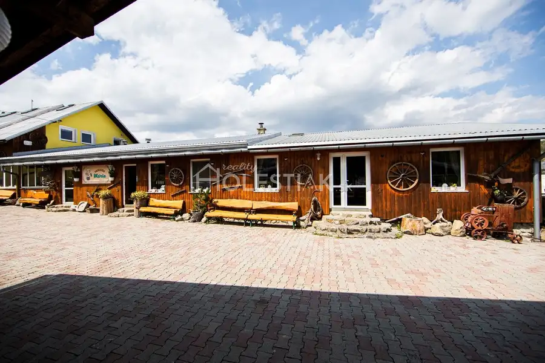
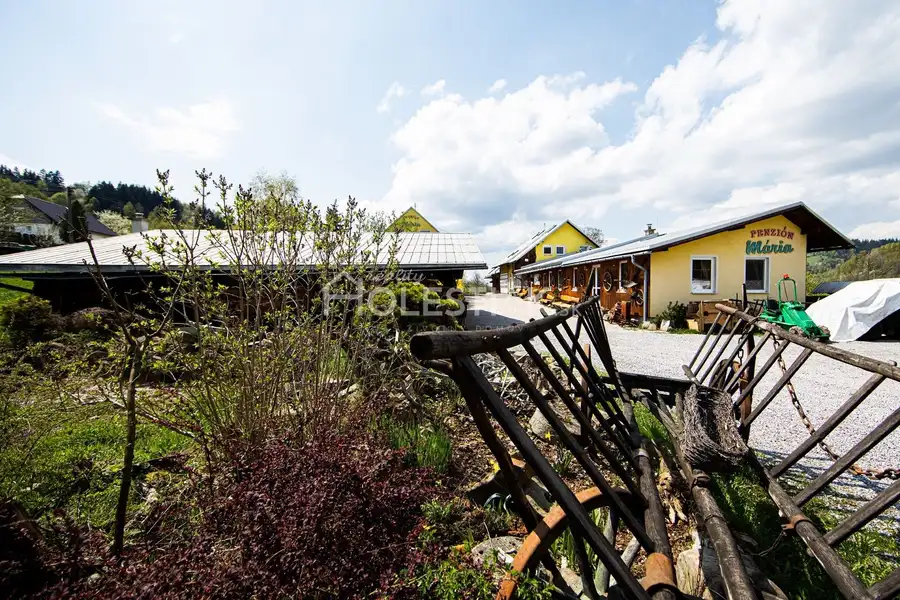
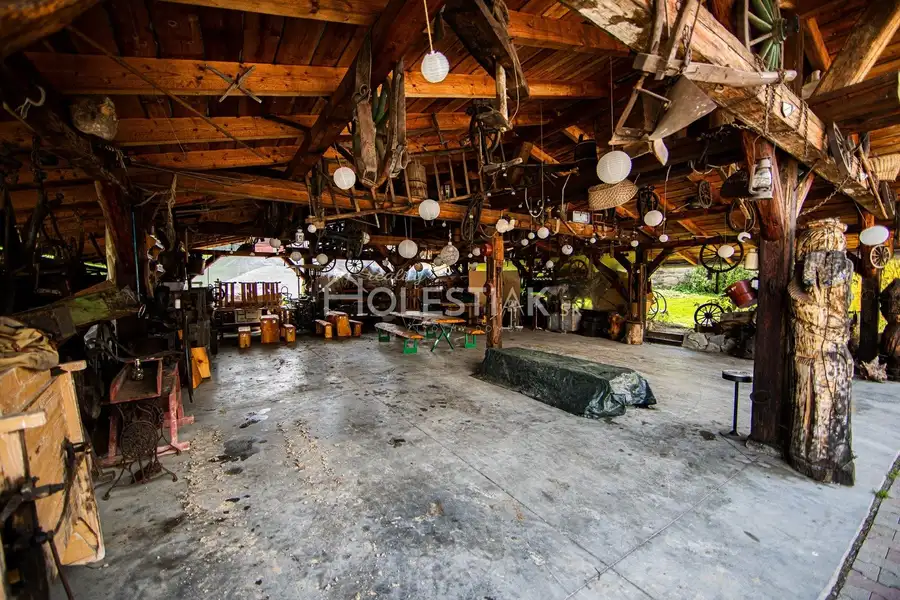
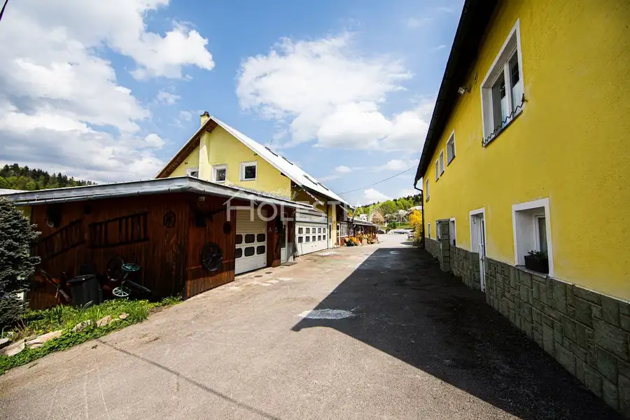
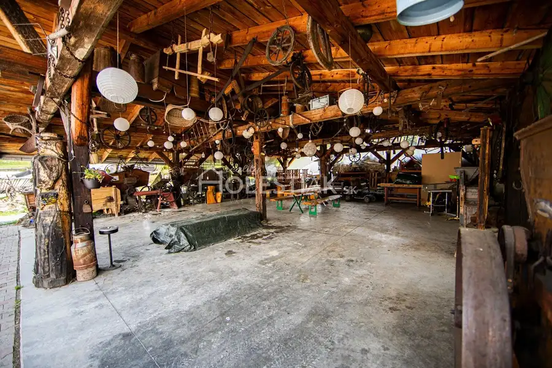
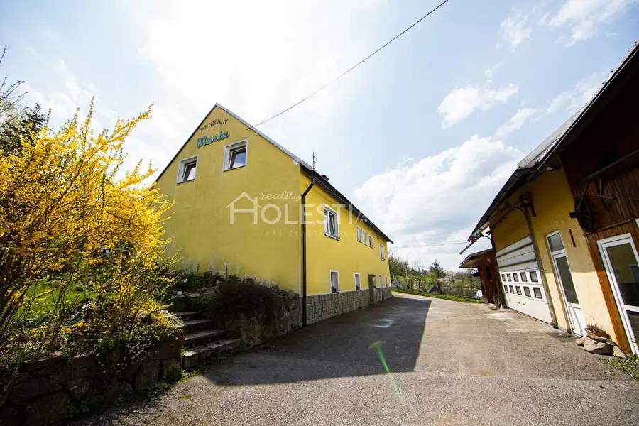
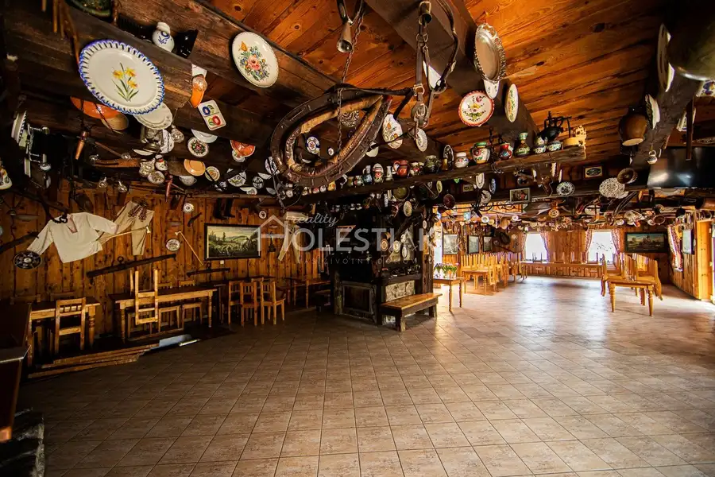

+ Video Predám veľký areál Skalité, reštaurácia, penzión, rodinný dom, servis, stavebné pozemky - exkluzívne
Skalité








- Plocha620 m²
- StavKompletná rekonštrukcia
- VlastníctvoOsobné
O nehnuteľnosti
Videoprehliadka: youtube.com/watch?v=2Ik-0WTdHXs&t=10s HOLESTIAK.sk reality ponúka na predaj, iba u nás, v krásnom prostredí Kysúc veľký areál v obci Skalité, časť Serafínov, Kysuce. Konkrétne - reštaurácia, penzión, rodinný dom, servis, veľké parkovisko pre 50 automobilov, ľudové humno na zábavy, stavebné pozemky. Penzión má 7 izieb s kapacitou 21 lôžok (5x2-posteľové, 1x6-posteľová, 1x5-posteľová, všade WC, sprcha). Rodinný dom 18x9 m, 10 izieb + 8 pivníc + práčovňa, 3 garáže + servis s dvihákmi a zariadením + ľudové humno na zábavy so starožitným vybavením 260 m2, Reštaurácia a vínna pivnica vedľa penziónu. Všetky IS. Zariadenie zostáva. Spolu 6743 m2, CKN, 1/1, bez ťarchy, 1,5 km od slovensko-poľskej hranice, 4-sedačky v lyžiarskom areáli Zvardoň, v dosahu 2 km diaľnica D3, železnica, cesta 1. triedy. Cena 712000 € vrátane stavebné pozemky (vyše 1900 m2). Dohoda pri konkrétnom rokovaní na cene možná. Ochotne realizujeme obhliadku areálu, volajte ešte dnes. Pozrite si naše video tohto zaujímavého areálu: youtube.com/watch?v=2Ik-0WTdHXs&t=10sPlus virtuálny dron, animovaná satelitná mapa, doplnená o dáta k nehnuteľnosti a jej okolia: youtube.com/watch?v=JJ3czeJjGFUNáklady súvisiace s prevodom nehnuteľnosti (zmluvy), katastrálne (návrh na vklad vlastníckeho práva) a notárske poplatky (overenie podpisov), sú v réžii našej realitnej kancelárie. Vzhľadom na našu dlhoročnú bankovú prax radi pomôžeme s najvýhodnejšou hypotékou i poistením. PhDr. Pavol Holeštiak, PhD., RSc. holestiak.sk reality Andreja Hlinku 28/4 022 01 Čadca tel.: +421 905 425 576e-mail: pavol@holestiak.skS nami predáte za viac a rýchlejšie.
Parametre
- Druh
- Reštaurácia
- Dátum zverejnenia
- 17. 06. 2022
- Elektrina
- Pri pozemku - 230 V, Pri pozemku - 400 V
- Energetický certifikát budovy
- nie je
- Odpadové vody
- Na pozemku - Žumpa, Pri pozemku - Kanalizácia
- Orientácia
- Juhovýchodná
- Plocha pozemku
- 6743 m²
- Plyn
- Pri pozemku
- Počet garáží
- 3
- Počet izieb / miestností
- 20
- Počet nadzemných podlaží
- 3
- Prístupová komunikácia
- Asfaltová
- Rok poslednej rekonštrukcie
- 2015
- Rok výstavby
- 1985
- Stav nehnuteľnosti
- Kompletná rekonštrukcia
- Telekomunikácie
- Internet, Telefón
- Typ
- Predaj
- Typ konštrukcie
- Tehlová
- Vlastníctvo
- Osobné
- Voda
- Pri pozemku - Verejný vodovod, Na pozemku - Studňa
- Vybavenie
- Predzáhradka, Garáž, Tepelná izolácia, Vonkajšie parkovacie miesto, Pivnica
- Vykurovanie
- Ústredné, Krb
- Zastavaná plocha
- 350 m²
- Úžitková plocha
- 620 m²